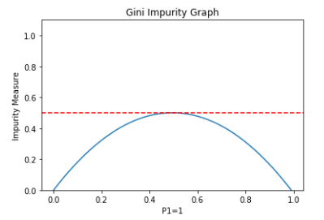

Today we are going to learn about decision tree classifier. This blog is to focus more about the maths behind it rather than its implementation.
The goal while creating a decision tree is to achieve maximum accuracy while maintaining the shortest
depth. The higher the depth, the higher is the chances of overfitting.
For example: Let's think that the we have a target varialbe which is 'IceMelted' which tells whether an ice cube is melted or not based on many features including 'Temperature' and 'SizeIceCube' which stores the size of icecube.
So, for target class IceMelted we have labels are 'Yes' and 'No'. The probability will be :
P(Yes) = IceMelted(Yes) / {IceMelted(No) + IceMelted(Yes)}
The Gini impurity for left Leaf => Temperature= 'High' will be:
g(Temperature='High') = P(Yes)*{1-P(Yes)} + P(No)*{1-P(No)}
The Gini impurity for right Leaf => Temperature='Low' will be:
g(Temperature='Low') = P(Yes)*{1-P(Yes)} + P(No)*{1-P(No)}
For the attribute Temperature, we will have to find the weighted Gini impurity(or Gini Gain) or total Gini impurity:
Let P(Left) define the total number rows in the left leaf/ total number of left and right leaf rows. Thus,
G(Temperature) = P(Left)*g(Temperature='High') + P(right)*g(Temperature='Low')
The lower the impurity the better that attribute classifies the target. Thus, the lowest impurity attribute will be the root node.
The graph shown below indicates the G(P) vs P. The impurity is maximum when we are not sure that the data falls in class 0 or class 1 (Highest point of G(P)). If we know for sure than the value of impurity is 0 (P=[0,1]). For displaying G(P) for multiple classes, the graph will become multidimensional.

Entropy and Information gain
Kullback–Leibler divergence: It calculates how much one probability distribution is different from others.
Formula: D(P||Q) = Σ P(x) log(P(x)/Q(x))
What we are trying to minimize:
For calculating the entropy we are trying to do the same. We are trying to reduce the similarity between the probability distribution of classes. For example: for a leaf node, if the probability is the same for each label corresponding to the node attribute, then the leaf node is not classifying anything.
So, if the above case happened, then:
Q(Label1) = Q(Label2) = Q(Label3) = .... = Q(Label K) = 1/K
where K is the total number of labels and Q is there probability. Thus the above equation changes to:
D(P||Q) = Σ P(x) { log(P(x)/(1/K) }
= Σ P(x) { log(P(x) - log(1/K) }
= Σ { P(x)log(P(x)) + P(x)log(K) }
Here, log(K) will be a constant. Thus log(K) Σ P(x) = log(K) (Sum of probabiity p=1)
So we are trying to maximise => Σ P(x)log(P(x)) or minimize => - Σ P(x)log(P(x)) , which is the negative entropy = H(Leaf)
So for the same node diagram above, we can represent it with node weighted entropy or information gain:
H(Temperature) : P(Left) * H(Leaf) + P(Right)*H(Leaf)
The split is axis-aligned (we can plot the dataset, apply to the algorithm, and check the results). This means it either horizontal or vertical or its combination.
References and amazing sources
1.
Machine Learning Lecture 29 "Decision Trees / Regression Trees" -Cornell CS4780 SP17. Author: Kilian Weinberger
2.
Gini Impurity (With Examples).Author: Brian Ambielli
3.
Kullback–Leibler divergence- Wikipedia.
4.
StatQuest: Decision Trees.Author: Josh Starmer
Image references
1. Gini impurity graph:
Gini Impurity Measure – a simple explanation using python.Author: Steven Loaiza